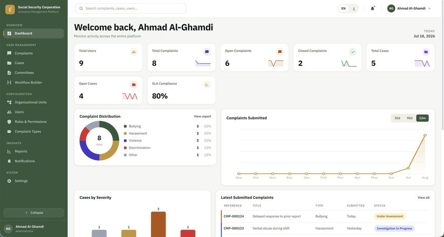
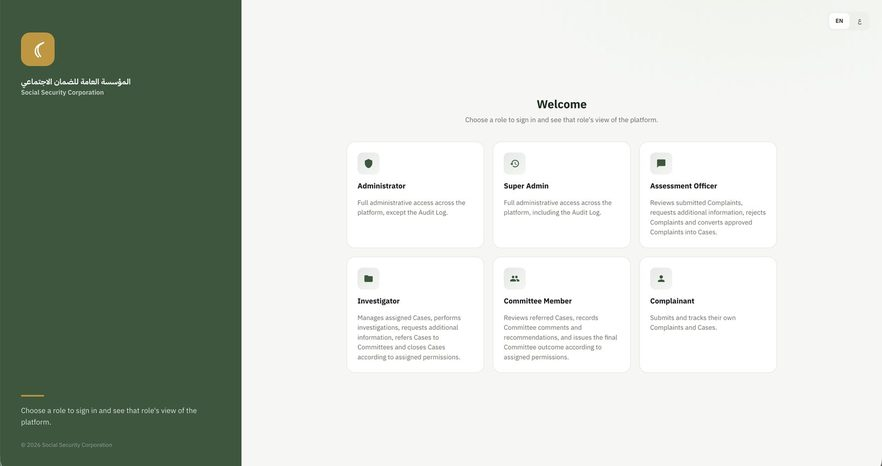
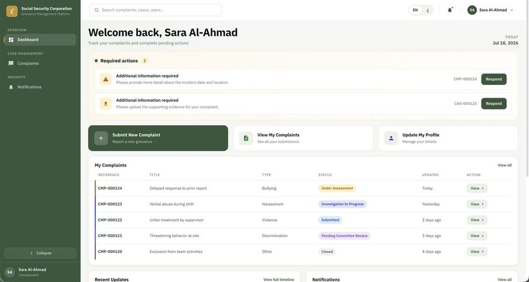

Software · Digital Transformation
ILO × Social Security Corporation: National Grievance Redressal Platform
Turned a paper-based national grievance process into a five-persona digital system: source code, servers, fire suppression and all.
The Mandate
Design, develop, and deploy a user-friendly and efficient electronic grievance handling mechanism within the internal staff platform of the entity: streamlining the submission, management, and resolution of grievances in a transparent, accountable, and timely manner, in line with best practice in digital public services.
The Challenge
Digital transformation in the strictest sense: replacing a hardcopy grievance process inside a national social security institution, where grievance anonymity is non-negotiable, where sensitive HR data is in scope, and where the system had to be capable of scaling to other Jordanian organisations without a rewrite.
The Execution
- Translated the entire SSC grievance policy (not merely the workflow) into a fully dynamic, configuration-driven system, so deploying to another organisation becomes a configuration exercise rather than a development project.
- Architected 5 user personas: super admin, grievance submitter, investigator, assessment officer, and investigation committee: with full administrative control over every permission, a general overview dashboard, and a purpose-built dashboard for each persona.
- Guaranteed grievance anonymity by design, and integrated with the HR system for employee and department lookup.
- Sourced, installed, and commissioned the on-premise production and backup servers at SSC.
- Prepared the server room itself, including a fire suppression system built to international standards.
- Deployed to the SSC estate, trained SSC employees on use and customisation, and enabled the SSC technical team to edit the source code independently.
- Governed vendor delivery through consultancy contracts on a 20% / 50% / 30% milestone schedule: 20% at project start, 50% on approval of the Training, UAT and CRP reports, 30% on the Go-Live Certificate, protected by a code integrity warranty clause.
- Extended the technical scope to cover QA and testing (functional, integration, load, regression), security review and penetration testing with a formal security report covering anonymity assurance and HR data protection, conditional data migration, training delivery with user and admin manuals, and full technical documentation including system architecture and a deployment runbook.
Results Delivered
- Paper-based national grievance process fully digitised.
- 5-persona role-based system with per-persona dashboards, granular permissions, and full configurability delivered.
- On-premise infrastructure sourced, commissioned and hardened to international standards.
- SSC technical team enabled to own and extend the codebase: no vendor lock-in left behind.
- Architecture proven ready for rollout across other Jordanian organisations without redevelopment.
Photos



Have a project that needs a steady hand?
Book a free 15-minute call, no pressure, just a conversation about where you're stuck.
Book a Free 15-Min Call